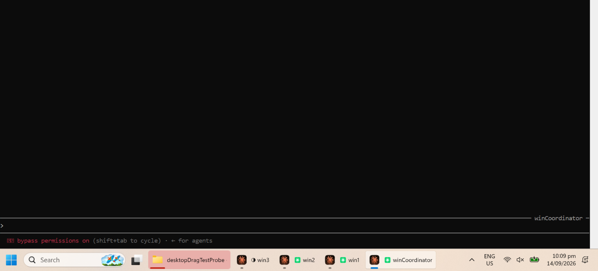
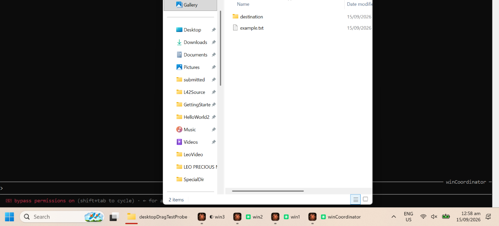
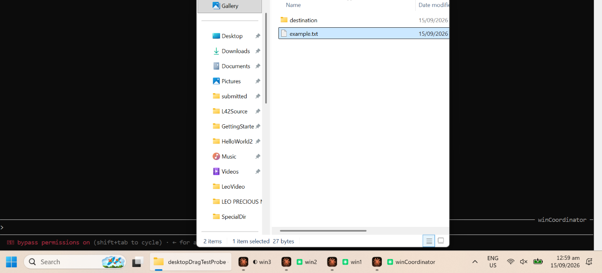
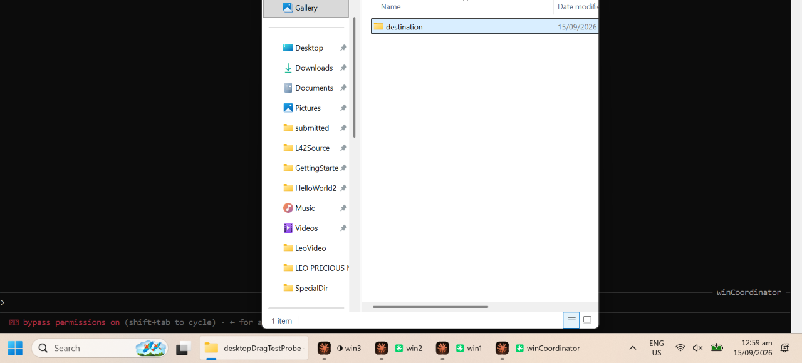

windowsSlowTestAgentTools: why DesktopDragTest still fails, driven one step at a time
A single-step, screenshot-confirmed-before-every-next-move repro of agentTools.DesktopDragTest.aFileDraggedOntoAFolderMovesInsideIt (run via TestAgentTools.java) on the Windows automation machine, following up on the failure recorded in winresults.html. Goal: find out whether the failing loop is an agent chaining Pilot calls blind, measure how brittle pointer positioning actually is, and get a slow, verified run to actually complete the drag — and, if the cause turns out general, fix it.
A general fix (no hardcoded coordinates) was implemented in DesktopDragTest.java and opened as Controllers#28. The unrelated AgentsCoordination#12 (hardcoded-pixel replay scripts committed to the shared repo) was already closed by the parallel Linux investigation; see §7.
1. Method
Every Pilot primitive below (open, shot, click, chord, drag) was issued as its own JVM launch against a small throwaway command-line harness built on the actual agentTools.Pilot and compiled classes (never committed, deleted at the end of this task), immediately followed by a full-screen Pilot.shot() that was read and visually inspected before deciding the next step. No two Pilot operations were chained without a screenshot landing in between until the mechanism itself was understood. The scenario matches DesktopDragTest: a temp folder holding one file (example.txt) and one empty subfolder (destination), opened with Desktop.getDesktop().open(), on a 1920×1080 Windows 11 desktop (rendered at 1280×720 user-space pixels under 150% scaling, per gui_gym.txt) shared with three other always-on agent terminals (win1, win2, winCoordinator).
2. Is the failing loop chaining blind operations?
Reading DesktopDragTest.java and Pilot.java directly (not guessing), before this task's fix:
- Before the first keypress: yes, blind, and the wrong kind of blind. The test opens the folder, does a fixed
Pilot.pause(3000), then diffs a before/after screenshot to find the window — but never checks that what it found is the window, or that it holds keyboard focus. A longer pause could not have fixed this (§3): the problem is not that 3000 ms is too short, it is that nothing in the loop ever confirms the assumption it is standing on. - Locating the two icons: not blind.
row()takes a screenshot and diffs it against a baseline viaPilot.changed(unselected, crop, 0)before trusting the result. Once the window genuinely has focus (§3, §5), this step measured correctly and consistently across every trial. - The drag itself: blind, and reasonably so.
pilot.drag(x0,y0,x1,y1)runs press→move→move→release as one uninterrupted gesture with no screenshot in the middle, matching how a real person drags — nobody pauses mid-drag to check a screenshot.
So: the original loop was arrogant in exactly one place — between opening the window and trusting it was ready — and that one gap is what breaks the whole run, since the row() and drag() steps that follow are only as good as the window rectangle they were handed.
3. Root cause: the new window can be entirely occluded and never gains focus, no matter the wait
Reproduced directly, on this machine, with a terminal window already holding foreground when the folder is opened (the normal state on this shared desktop — some agent's terminal is always the active window):
- Screenshot before opening: baseline desktop.
Desktop.getDesktop().open(root.toFile()), then screenshot immediately: a new taskbar button for the folder appears; no window is visible anywhere on screen.- Waited 3 full seconds, screenshotted again: still no window visible, the taskbar button no longer even flashing, the other terminal still the visibly active window (see Fig. 1).
- Sent
VK_DOWNanyway and screenshotted: no change anywhere in the Explorer content area — the key went to whatever already had focus, not to Explorer (Fig. 2).

Desktop.open(): the only visible sign the folder opened at all is the new taskbar button (bottom left of the taskbar). No window ever rendered on top.VK_DOWN: nothing changed. The key was not lost to timing — it went to the still-focused terminal, since the Explorer window was never given focus to begin with.This is a genuine Windows behavior, not a bug in Pilot: a process that is not itself the foreground application (here, the JVM launched from a background shell) generally cannot force a newly opened window to the foreground; Windows grants the new window a taskbar flash instead and leaves keyboard focus wherever it already was. No amount of waiting changes that outcome — it is a permission the OS withholds, not a race it eventually resolves. Pilot.changed(before, after, 6) then does exactly what it is supposed to: it finds the single largest connected region that changed between the two screenshots, and on this machine that region is reliably the new taskbar button (a small, roughly 130–230 px wide, ~30–40 px tall rectangle near the bottom of the screen), not the (invisible) window. Every step downstream — cropping an “unselected” reference image, diffing for row selection, computing icon coordinates — then operates on a slice of the taskbar, and the eventual assert bestN>0 failure reported in winresults.html is simply the row-selection diff finding no change at all inside that meaningless crop.
4. The fix: a real click is the one gesture a window cannot refuse
gui_gym.txt already recorded, from earlier manual sessions, that “clicking the target window's taskbar icon directly…was the reliable way to raise and focus a window here” — the automated test simply never used it. The fix adds one step between opening the folder and trusting the result: click the center of whatever region the diff found (window or taskbar button — the same code path handles either, since a click inside an already-visible window's content area is harmless), then re-shot and re-measure the window from that point on. The click target is always computed from Pilot.changed, never a fixed coordinate, so it adapts to wherever the taskbar button or window actually lands.
- Clicked the center of the detected taskbar-button rectangle.
- Screenshot: the Explorer window is now fully visible, in the foreground, its title bar highlighted active (Fig. 3).
- Sent
VK_DOWN, screenshotted:example.txtvisibly highlighted, status bar reads “1 item selected” (Fig. 4). - Sent
VK_UP, screenshotted: selection moved todestination, exactly asrow()'s own doc comment predicts. - Dragged from the file's icon to the folder's icon (eyeballed coordinates from the screenshot, no special care): the window afterward shows one item left (
destination), and the file is confirmed on disk atdestination/example.txt(Fig. 5).


VK_DOWN now reaches the window: example.txt highlighted, status bar confirms the selection.
destination remains in the window; the file is confirmed moved on disk.This exact sequence (open → diff → click → diff → row(down) → row(up) → drag) was then re-run as DesktopDragTest.java itself, via TestAgentTools.java, three consecutive times from a clean process each time:
| Trial | Result |
|---|---|
| 1 | example.txt moved into destination/ |
| 2 | example.txt moved into destination/ |
| 3 | example.txt moved into destination/ |
TestAllController.java (149/149, excludes agentTools) was also re-run after the change and remained green, as expected since only DesktopDragTest.java was touched.
5. How brittle is pointer positioning, in actual pixels?
With the fix in place and the real row rectangles read back from the harness (fileRow=(592,198,364,25), folderRow=(592,170,364,24) in this window's placement — a 24–25 px tall row), the drag's source point was offset from the icon center in a grid of trials, each a full fresh run of the fixture, to find where it stops landing on the file:
| Offset from icon center | Direction | Result |
|---|---|---|
| 0 px | — | moved |
| +8 px | down (into row) | moved |
| +10 px | down (into row) | moved |
| +11 px | down (toward row edge, row half-height ≈12–13 px) | missed |
| +12 px | down | missed |
| −5 px | up (into row) | moved |
| −8 px | up (into row) | moved |
| −9 px | up (toward row edge) | missed |
| −10 px | up | missed |
| +150 px | right, same row (mid-row, past the file name text) | missed |
| +340 px | right, same row (near the “date modified” text, row is 364 px wide) | moved |
Two findings from this grid:
- Vertical tolerance is real but asymmetric and roughly ±8–10 px around the icon center in a 24–25 px row (about 70–80% of the half-row-height) — comfortably inside the icon glyph, but a caller has no more than about a third of the row's height to spare before landing on the row above or below, or on nothing draggable at all.
- The row is not uniformly draggable end to end. A point in the middle of the row's blank space (past the file name, before the date column) did not pick up the item to drag from at all, while a point further right, over the date text, did. This means “click anywhere on the row” is false in Windows' Details view, and only the icon glyph near the row's left edge (or actual text glyphs further along) reliably grabs the item.
iconX/iconY's existing choice —row.x+row.height/2, i.e. the icon square itself — already lands inside the one part of the row proven safe here, which is why it needed no change.
Caveat: this grid was walked on one window placement, in one session; row rectangles differ by a few pixels between separate window opens (Explorer does not guarantee pixel-identical placement across launches), so the exact boundary numbers above are specific to that placement, not universal constants — but the shape of the result (a tolerance on the order of a third of the row height, and an unreliable row interior) should generalize.
6. What was fixed, and what was not
Controllers#28 adds one step, raise(), to DesktopDragTest.java: after opening the folder, wait briefly, diff against the pre-open baseline, click the center of whatever changed, then re-shot and re-measure. It uses only Pilot's existing, cross-platform primitives (shot, changed, click) and no hardcoded coordinate or Windows-specific API, so it is not expected to be Windows-only, though it was only verified on Windows in this task. Not changed: Pilot.java itself, and row()'s icon-location logic, which was already correct once given a real window to measure.
Not investigated here: whether the same “window opens without focus” behavior would occur with no other agent terminal holding foreground (e.g. a genuinely idle desktop) — on this always-shared machine that state essentially never occurs, so the fix was designed to hold regardless, and does not rely on the window ever having been granted focus for free.
7. The closed PR: recorded-coordinate scripts belong local, not in the shared repo
AgentsCoordination#12 had committed 3 auto-mode replay scripts for the Fearless Manager's manual GUI test plan, each built by recording a human-driven Pilot session and hardcoding the resulting pixel coordinates into a committed Java file. It was already closed, for exactly this reason, by the parallel investigation recorded in linuxSlowTestAgentTools.html §7, before this task began; nothing further was needed here. The ±8–10 px tolerance and the unreliable row-interior measured in §5 above are exactly the kind of brittleness such a script has no way to notice once it goes stale — it just clicks the wrong thing, silently. The throwaway harness built for this investigation (a small command-line wrapper issuing single Pilot primitives) was deleted at the end of this task and was never committed anywhere, for the same reason.
Findings added to gui_gym.txt
- A window opened via
Desktop.open()from a background process can render fully behind whatever already holds foreground and never receive real keyboard focus, however long the caller waits; a genuine mouse click (on the window if visible, or on its taskbar button if not) is what actually grants focus, and the target for that click can be read straight off a before/after screenshot diff. - Windows Explorer's Details view does not treat the whole row as a uniform drag/click target: a point in the row's blank middle space can miss entirely, while the icon glyph and the text columns work.